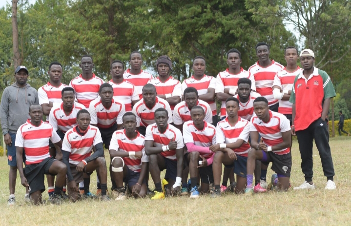

Our professional photographers can capture the action and emotion of your rugby matches and events. We offer both individual and team photo shoots, and can also provide prints and digital copies.
We can create high-quality videos of your rugby matches and events, including highlights, interviews, and behind-the-scenes footage. Our videographers use the latest equipment and techniques to ensure stunning results.
Our experienced rugby coaches can help you improve your skills and technique, whether you're a beginner or an advanced player. We offer both group and individual coaching sessions, and can tailor our approach to your specific needs.